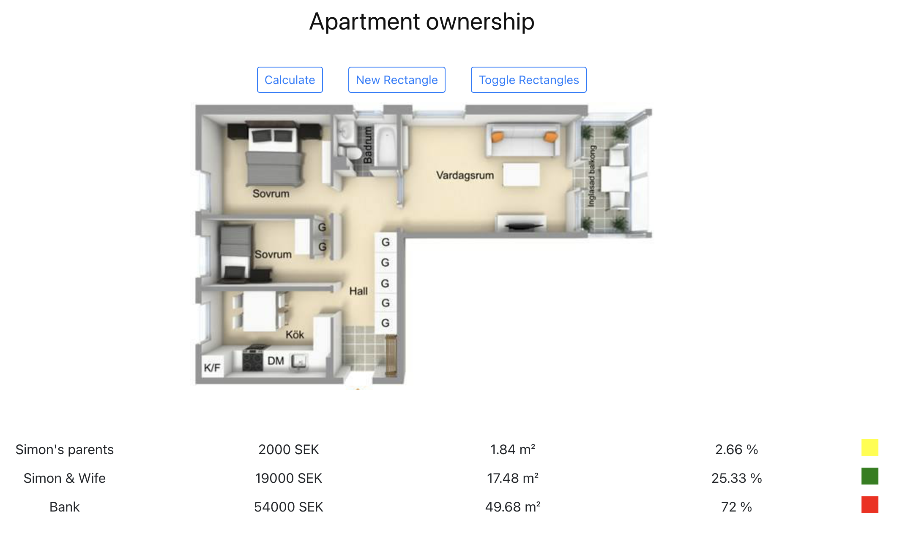
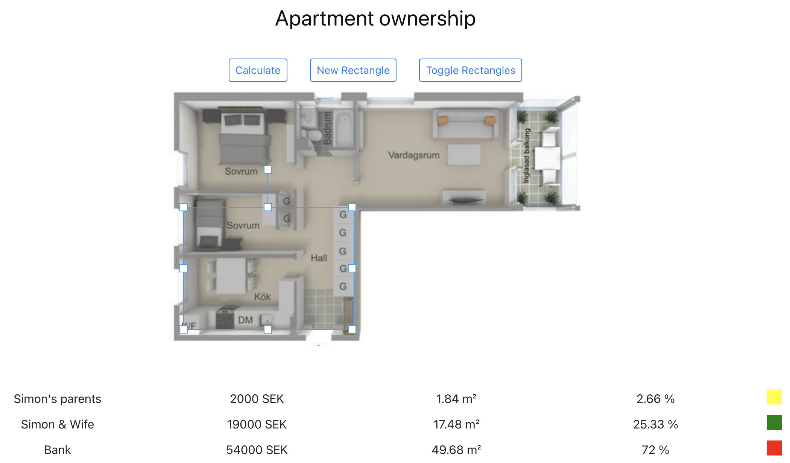
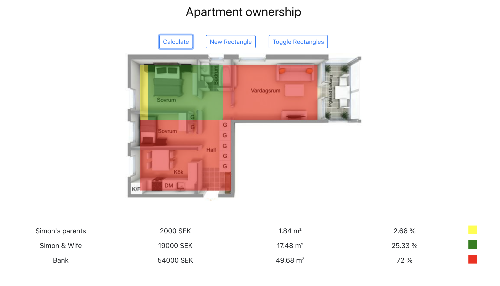

A few years ago me and my wife bought our first apartment, it was the first apartment either of us owned. The concept of a mortgage was therefore also new to us, in addition we got some help from our parents with the down payment.
I’m always interested in visualising and tracking numbers and our shared mortgage was not different. I had the idea to visualise it physically where we look at the mortgage not as just huge sums of money but actual ownership of square meters in the apartment. I have no illusion that this is a novel idea, but that hasn’t stopped me from building small POCs before.
At this point the tools last commit was 5 Years ago but to my surprise it still worked, kinda, I had to add nvm
and get an old version of node to make start-react-app happy. But within 5 minutes I had it running again. At the time
this project was both for learning React and have a small goal to aim for.
The core is extremely simple, and I never really got any further than the core before I was swept up or sidetracked by something different. But I got to a POC that proved to myself that this kind of visualisation is quite nice and I had explored the tech I was interested in, in this case React. That’s usually when I tend to loose interest in these smallish personal projects.
The result
The result was a simple somewhat harcoded single page, not a SPA, literally just a single page. Most of it is hardcoded but could of course be improved to be configurable.
The pictures below contain made up numbers.
At the top we have an image of floor plan of the apartment, below is a list of owners and what percentage they own.

The first thing to do is to click the new rectangle button and add rectangles to set the bounds of the apartment. Multiple rectangles can be added and resized. Together they should cover the inside of the apartment without overlapping. 
You click calculate and the rectangles are filled in with color based on ownership, basically letting you see what parts you own and what parts belong to the bank. Playing around with multiple rectangles allows some basic control over how the distribution of ownership in the apartment works. 
Conclusion
For me and my wife it started out with us basically owning a sliver the size of a couple of square meters. Soon however we started owning the bathroom or even larger rooms. This was motivating us when paying our mortgage.
I guess tool wise it could have become much more than it is and was. However, it was just enough to play around and try things out without a huge investment. I had larger plans that I never realised because this iteration was good enough to fill my own needs.
This was my first react project so it is very simple but the code is on GitHub regardless.